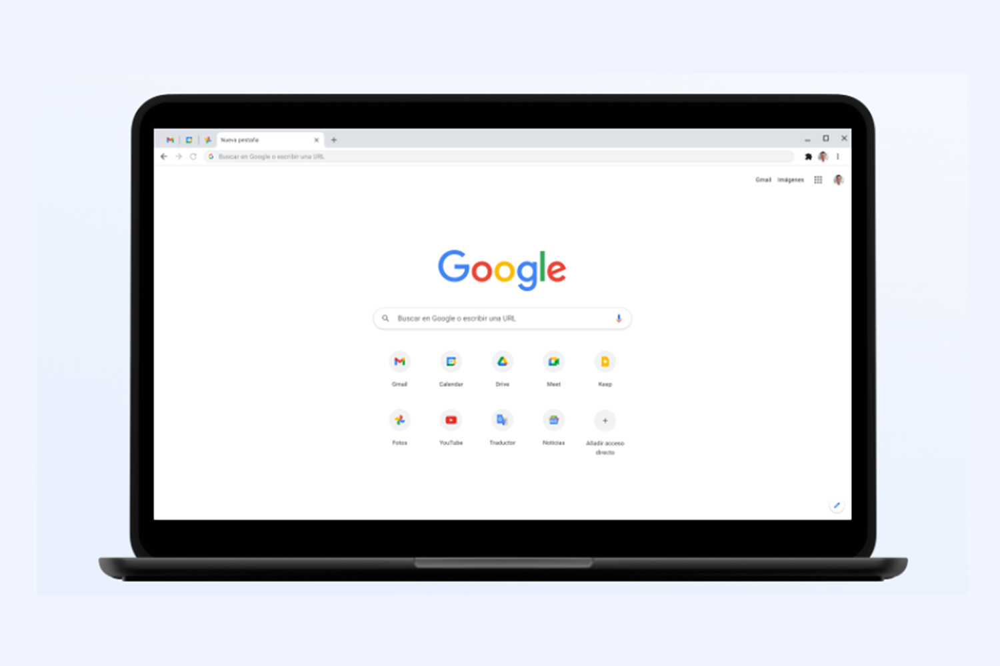
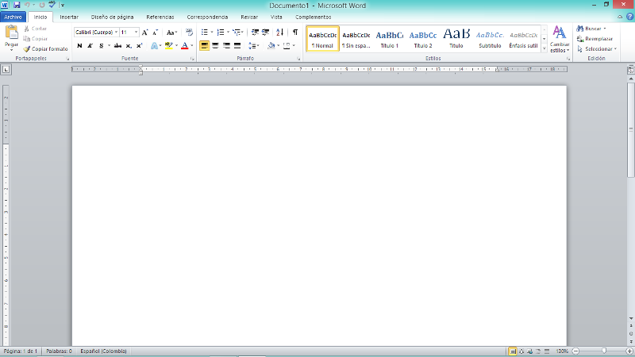

Navegadores Web
Configuración y mantenimiento
Ver guía paso a paso
1. Borrar caché
Mejora rendimiento.
2. Actualizar
3. Revisar extensiones

Suite Ofimática
Instalación y actualización
Ver guía paso a paso
1. Instalación
2. Activación
3. Actualizaciones automáticas
Antivirus
Instalación y prevención